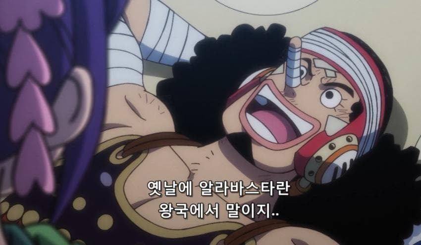
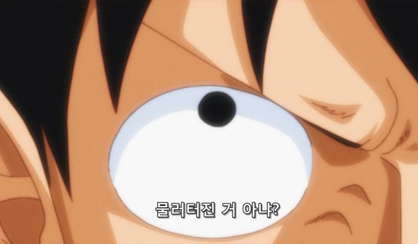
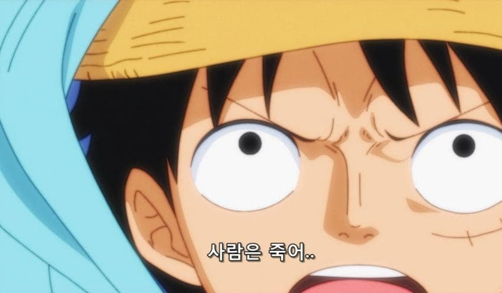
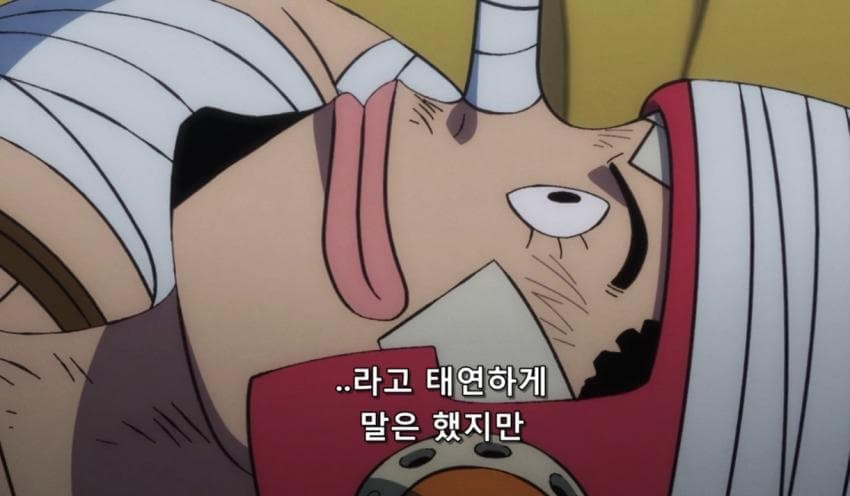
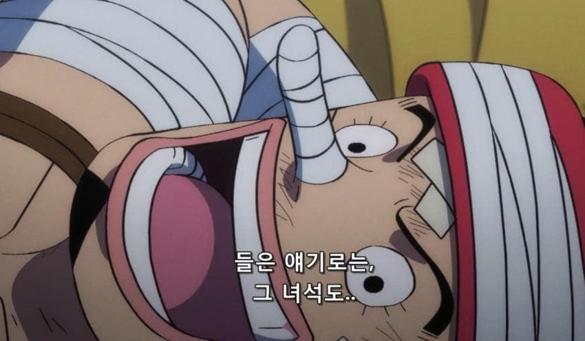
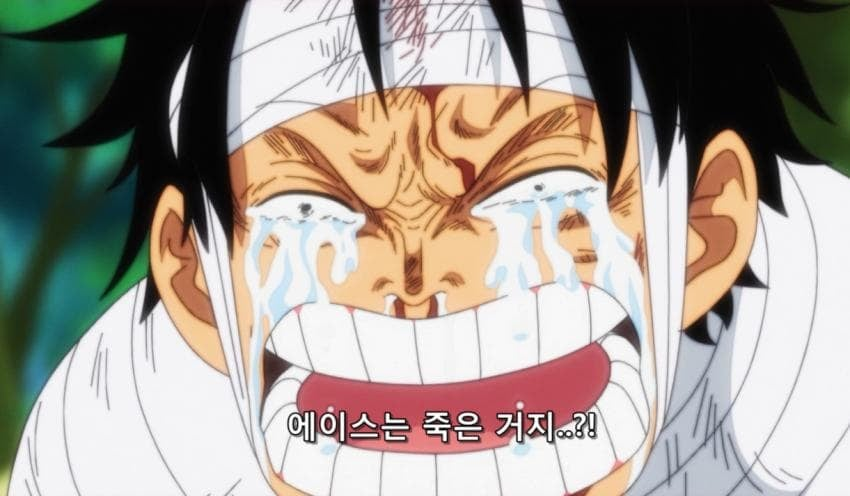
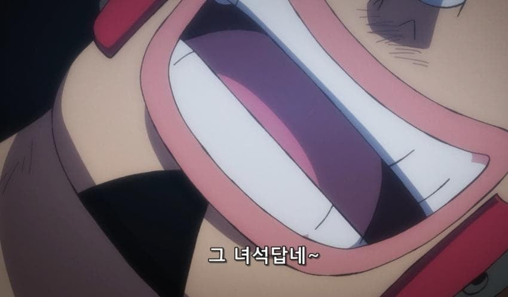

"내려"
이거 진짜냐? ㅋㅋㅋㅋ
팩폭 ㅈㄴ잘하네
원작엔 없고 애니에서 나온거
사람 생각하는 건 똑같나 ㅋㅋ
일본애들도 저거 이해 안됐나 보네
루피 이 니가족충 새끼ㅋㅋㅋ
우솝 저렇게 누운건 나미가 올라탈 준비하는거지?
나미도 고민중일걸 야츄에 올라탈지 코에 올라탈지
야츄를 길게 늘여서 동시에 둘 다
https://namu.wiki/w/%EC%98%A4%ED%83%80%EB%A7%88(%EC%9B%90%ED%94%BC%EC%8A%A4)
일단 저 짤에 있는 여자는 오타마라는 8살짜리 얼라임
고잉메리호 사건 존나 담아두고 있었네ㅋㅋ
???: 우솝, 내려
담당 일진 없는곳에선 원래 친구인척 하는거지
내려씨발 ㅋㅋ
백성 죽는거랑 의형제지만 거의 찐형제급으로 지낸형이 죽는거랑같냐 씨발솝아 애비없는티내노
뭐가 달라
이게 저격킹...!
어차피 사람은 죽는다고 한 다음에 비비한테 자기들 목숨도 걸으라고 했었나
근데 가끔 드래곤볼이랑 콜라보하더만
드래곤볼 빌려서 에이스 살리면 안됨?
편집 ㅋㅋㅋㅋㅋㅋㅋㅋㅅㅂ
즉시 상사 뒷담
ㅋㅋㅋ시발년 아직도 기억하고있네 고닉메모라도 해놨노게이야
"우솝 오빠, 드레스로자에서의 활약 진짜인가요? 자신과 닿은 사람을 능력자에게 완전 복종하는 장난감으로 만들고, 장난감이 된 사람에 대한 기억은 사라진다고요? 그런 초딩이 생각할 법한 씹좆망 열매가 실존하고, 능력자의 정신력이 연약해서 우솝 오빠의 못생긴 얼굴을 보고 놀라서 기절해서 쓰러뜨렸다고요?
구라 좀 정도껏"
내리라고 우솝
내려 시발아
다 쌓아뒀노
헉